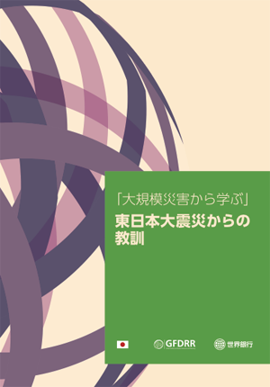
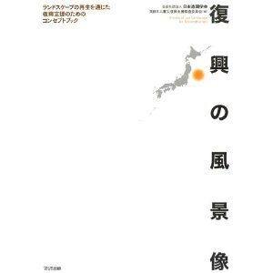

リソースポータル
国別情報
東日本大震災にまつわる提言／レポートなど

「大規模災害から学ぶ」東日本大震災からの教訓（世界銀行 東京事務所と日本政府の共同研究プロジェクトによるレポート）
各章の最後に、日本でとられている対策を途上国向けに実現するにはどうしたらいいかという視点から書かれた要約が載っています。

各章の最後に、日本でとられている対策を途上国向けに実現するにはどうしたらいいかという視点から書かれた要約が載っています。